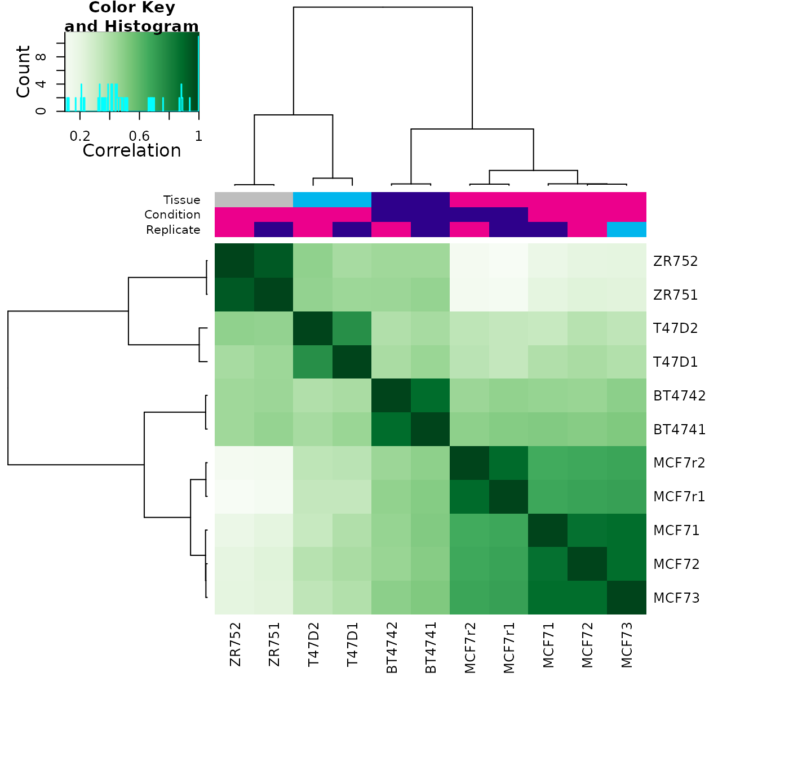
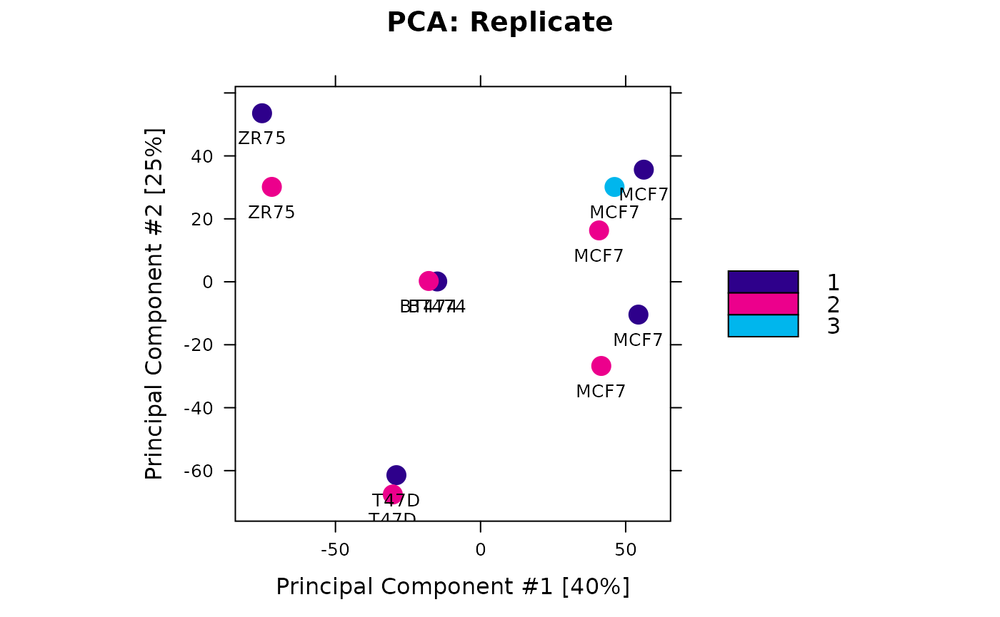
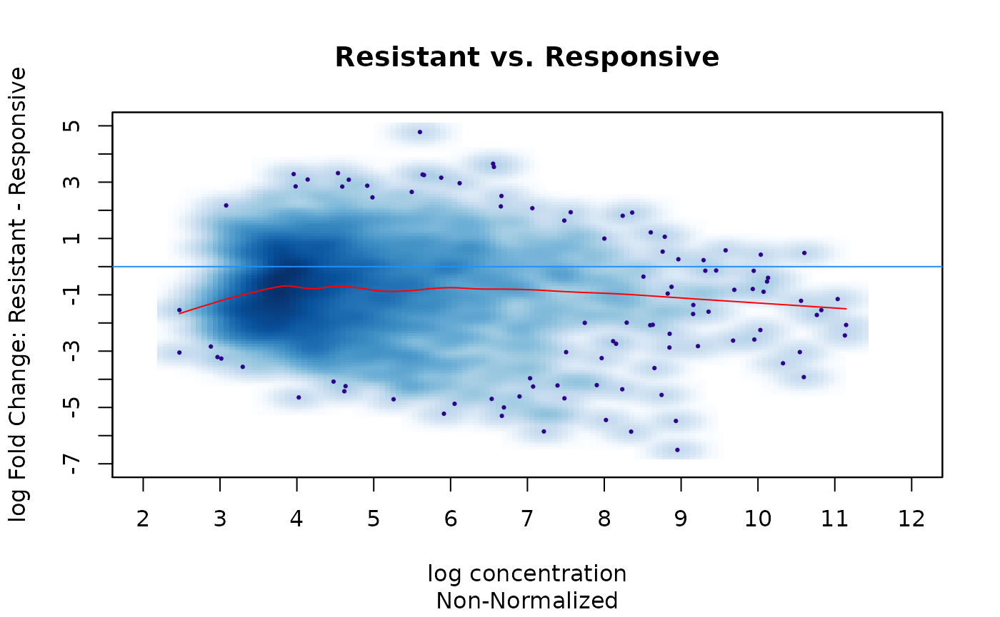
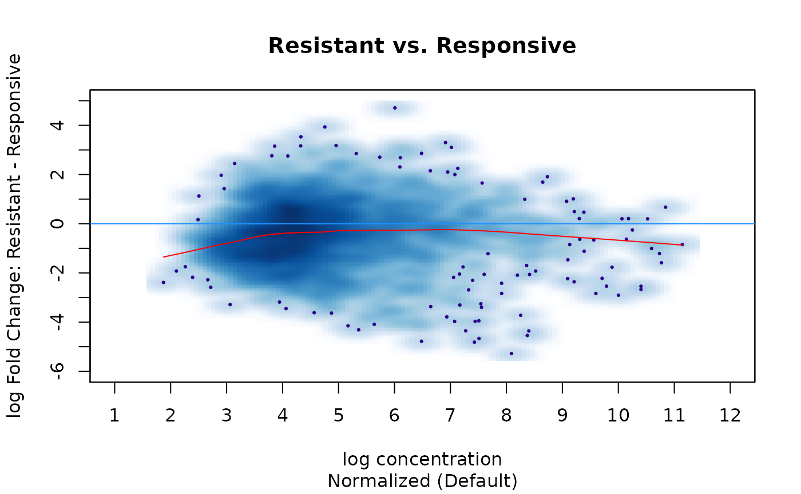
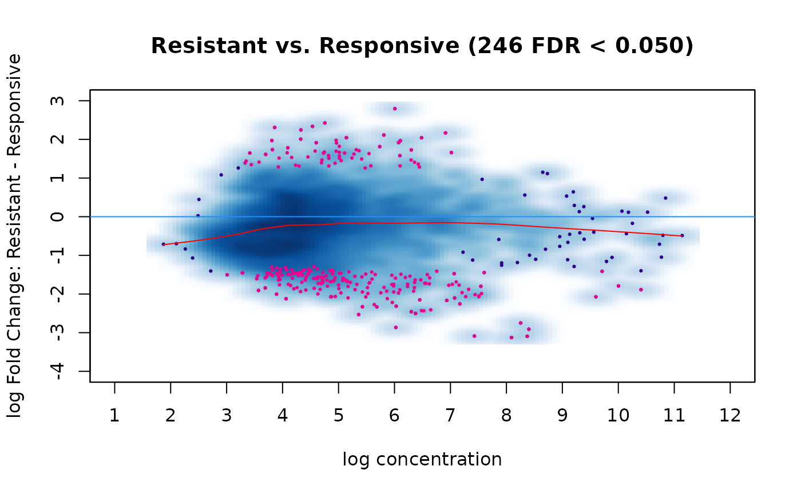
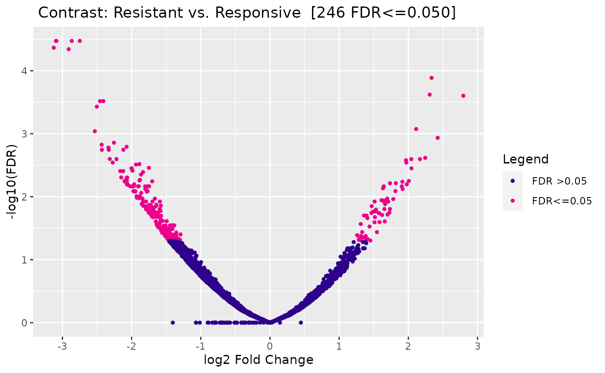
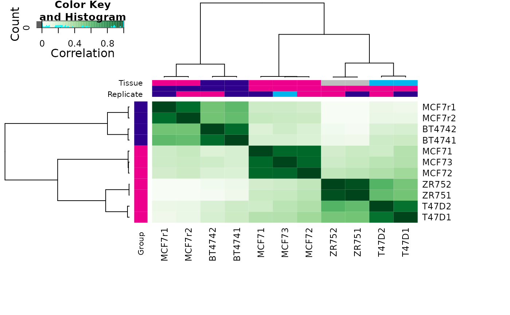
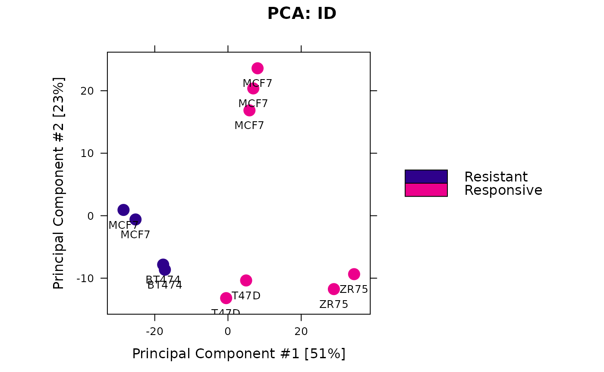
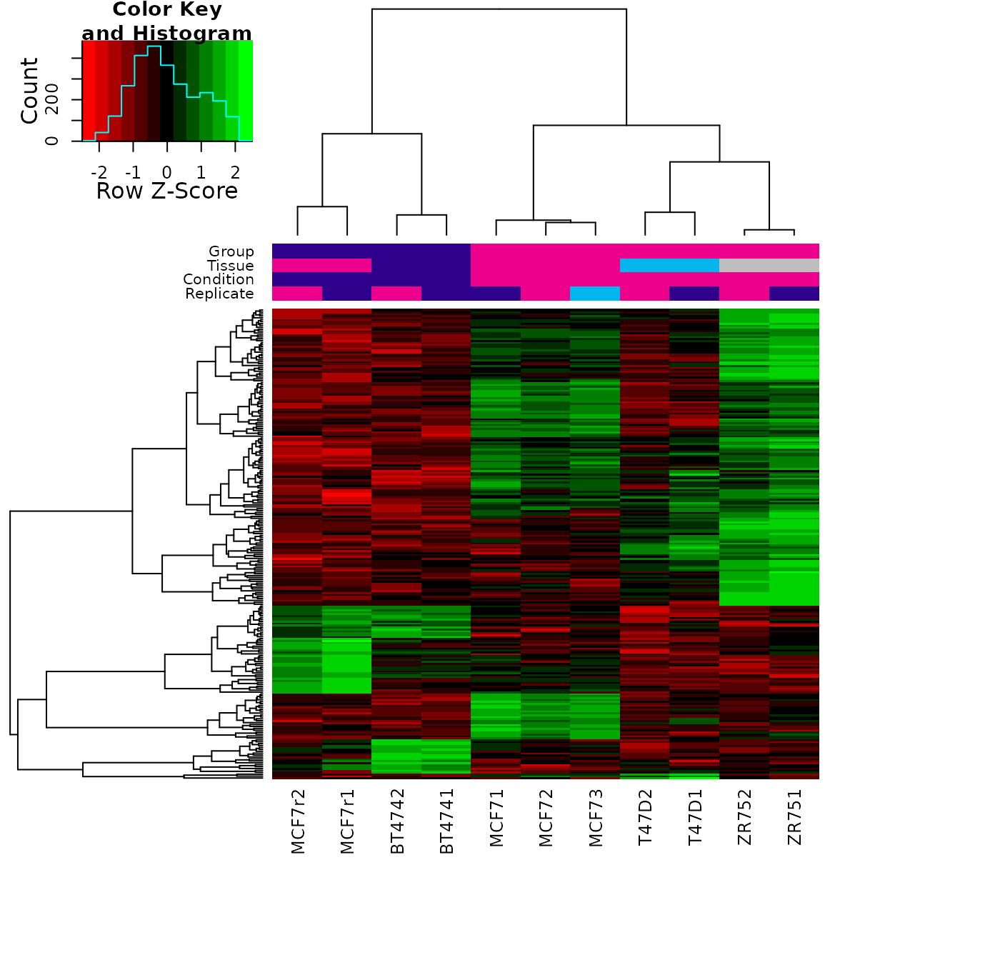

vignettes/Quantitative-ChIPseq-Workshop.Rmd
Quantitative-ChIPseq-Workshop.RmdDocker users can run this workshop locally via:
docker run -e PASSWORD=DiffBind -p 8787:8787 crukcibioinformatics/quantitative_chip_workshop:latestThen open a browser and go to the URL localhost:8787. Log into RStudio with username:rstudio and password:DiffBind.
The workshop uses a Docker container with Bioconductor Release version 3.12. If you would like to install Bioconductor on your computer at a later date, see the Bioconductor installation instructions.
Here is a list of packages that we will be using:
## Loading required package: GenomicRanges## Loading required package: stats4## Loading required package: BiocGenerics## Loading required package: parallel##
## Attaching package: 'BiocGenerics'## The following objects are masked from 'package:parallel':
##
## clusterApply, clusterApplyLB, clusterCall, clusterEvalQ,
## clusterExport, clusterMap, parApply, parCapply, parLapply,
## parLapplyLB, parRapply, parSapply, parSapplyLB## The following objects are masked from 'package:stats':
##
## IQR, mad, sd, var, xtabs## The following objects are masked from 'package:base':
##
## anyDuplicated, append, as.data.frame, basename, cbind, colnames,
## dirname, do.call, duplicated, eval, evalq, Filter, Find, get, grep,
## grepl, intersect, is.unsorted, lapply, Map, mapply, match, mget,
## order, paste, pmax, pmax.int, pmin, pmin.int, Position, rank,
## rbind, Reduce, rownames, sapply, setdiff, sort, table, tapply,
## union, unique, unsplit, which.max, which.min## Loading required package: S4Vectors##
## Attaching package: 'S4Vectors'## The following object is masked from 'package:base':
##
## expand.grid## Loading required package: IRanges## Loading required package: GenomeInfoDb## Loading required package: SummarizedExperiment## Loading required package: MatrixGenerics## Loading required package: matrixStats##
## Attaching package: 'MatrixGenerics'## The following objects are masked from 'package:matrixStats':
##
## colAlls, colAnyNAs, colAnys, colAvgsPerRowSet, colCollapse,
## colCounts, colCummaxs, colCummins, colCumprods, colCumsums,
## colDiffs, colIQRDiffs, colIQRs, colLogSumExps, colMadDiffs,
## colMads, colMaxs, colMeans2, colMedians, colMins, colOrderStats,
## colProds, colQuantiles, colRanges, colRanks, colSdDiffs, colSds,
## colSums2, colTabulates, colVarDiffs, colVars, colWeightedMads,
## colWeightedMeans, colWeightedMedians, colWeightedSds,
## colWeightedVars, rowAlls, rowAnyNAs, rowAnys, rowAvgsPerColSet,
## rowCollapse, rowCounts, rowCummaxs, rowCummins, rowCumprods,
## rowCumsums, rowDiffs, rowIQRDiffs, rowIQRs, rowLogSumExps,
## rowMadDiffs, rowMads, rowMaxs, rowMeans2, rowMedians, rowMins,
## rowOrderStats, rowProds, rowQuantiles, rowRanges, rowRanks,
## rowSdDiffs, rowSds, rowSums2, rowTabulates, rowVarDiffs, rowVars,
## rowWeightedMads, rowWeightedMeans, rowWeightedMedians,
## rowWeightedSds, rowWeightedVars## Loading required package: Biobase## Welcome to Bioconductor
##
## Vignettes contain introductory material; view with
## 'browseVignettes()'. To cite Bioconductor, see
## 'citation("Biobase")', and for packages 'citation("pkgname")'.##
## Attaching package: 'Biobase'## The following object is masked from 'package:MatrixGenerics':
##
## rowMedians## The following objects are masked from 'package:matrixStats':
##
## anyMissing, rowMedians## ## >>> DiffBind 3.0 includes substantial updates. See ?DiffBind3 for details on what has changed.First make sure your current working directory is correct:
## [1] "/__w/Quantitative-ChIPseq-Workshop/Quantitative-ChIPseq-Workshop/inst/extdata"The directory should be "/home/rstudio/inst/extdata". If it is not, change the working directory:
setwd("inst/extdata")DiffBind
In order to run an quantitative analysis, all the experimental data must be ready. This includes three types of data:
An experiment is based on a number of samples. Each sample needs a unique SampleID. A comparative analysis requires that the samples are associated with at least two classes that can be compared. The classes the samples belong to are indicated by associated samples metadata, which can include:
Note that not all of these are required, but there should be at least one metadata factor to divide the samples into classes.
Finally it is imperative that the experimental classes be represented by Replicate samples. It is not possible to perform a meaningful quantitative analysis without replicated data to capture variance. Generally a minimum of three replicates are required to obtain meaningful results.
The second type of data needed for an analysis are aligned sequencing reads, generally in the form of ‘.bam’ files. Each sample needs an aligned sequencing library, but may include the following:
The type of analysis we are discussing today requires that a peak caller (such as MACS) has been used on the aligned reads to call peaks. While having called peaks for the sample is useful in a variety of ways, it is possible to perform a quantitative analysis without using called peaks. For example, in some cases, the regions of interest may be known in advance (such as a list known gene promoters). An alternative is to perform a quantitative analysis using windows that cover the entire genome. The csaw package (Lun and Smyth 2016) provides a tool to perform such an analysis.
The easiest way to set up an experiment for analysis in DiffBindis to use a sample sheet. This can take the form of a .csv file, or a dataframe.
We can read in the sample sheet provided for the example data set:
samples <- read.csv("tamoxifen.csv")
samples## SampleID Tissue Factor Condition Treatment Replicate
## 1 BT4741 BT474 ER Resistant Full-Media 1
## 2 BT4742 BT474 ER Resistant Full-Media 2
## 3 MCF71 MCF7 ER Responsive Full-Media 1
## 4 MCF72 MCF7 ER Responsive Full-Media 2
## 5 MCF73 MCF7 ER Responsive Full-Media 3
## 6 T47D1 T47D ER Responsive Full-Media 1
## 7 T47D2 T47D ER Responsive Full-Media 2
## 8 MCF7r1 MCF7 ER Resistant Full-Media 1
## 9 MCF7r2 MCF7 ER Resistant Full-Media 2
## 10 ZR751 ZR75 ER Responsive Full-Media 1
## 11 ZR752 ZR75 ER Responsive Full-Media 2
## bamReads ControlID bamControl
## 1 reads/Chr18_BT474_ER_1.bam BT474c reads/Chr18_BT474_input.bam
## 2 reads/Chr18_BT474_ER_2.bam BT474c reads/Chr18_BT474_input.bam
## 3 reads/Chr18_MCF7_ER_1.bam MCF7c reads/Chr18_MCF7_input.bam
## 4 reads/Chr18_MCF7_ER_2.bam MCF7c reads/Chr18_MCF7_input.bam
## 5 reads/Chr18_MCF7_ER_3.bam MCF7c reads/Chr18_MCF7_input.bam
## 6 reads/Chr18_T47D_ER_1.bam T47Dc reads/Chr18_T47D_input.bam
## 7 reads/Chr18_T47D_ER_2.bam T47Dc reads/Chr18_T47D_input.bam
## 8 reads/Chr18_TAMR_ER_1.bam TAMRc reads/Chr18_TAMR_input.bam
## 9 reads/Chr18_TAMR_ER_2.bam TAMRc reads/Chr18_TAMR_input.bam
## 10 reads/Chr18_ZR75_ER_1.bam ZR75c reads/Chr18_ZR75_input.bam
## 11 reads/Chr18_ZR75_ER_2.bam ZR75c reads/Chr18_ZR75_input.bam
## Peaks PeakCaller
## 1 peaks/BT474_ER_1.bed.gz bed
## 2 peaks/BT474_ER_2.bed.gz bed
## 3 peaks/MCF7_ER_1.bed.gz bed
## 4 peaks/MCF7_ER_2.bed.gz bed
## 5 peaks/MCF7_ER_3.bed.gz bed
## 6 peaks/T47D_ER_1.bed.gz bed
## 7 peaks/T47D_ER_2.bed.gz bed
## 8 peaks/TAMR_ER_1.bed.gz bed
## 9 peaks/TAMR_ER_2.bed.gz bed
## 10 peaks/ZR75_ER_1.bed.gz bed
## 11 peaks/ZR75_ER_2.bed.gz bedHere we see the example ChIP-seq data set used for this tutorial. It consists of 11 samples, all ChIPed for the same factor (ER, the estrogen receptor). There are four breast-cancer cell lines involved, representing two experimental conditions: cells that either Responsive to the drug tamoxifen, or those that are Resistant to tamoxifen. Note that one cell line (MCF7) is marked as being both Resposnsiveand Resistant; these cells are naturally Responsive, but a Resistant version has been derived by treating with tamoxifen until only resistant cells remain. The goal of the experiment is to examine changes in ER binding patterns between the two conditions.
There are seven replicates of Responsive samples, encompassing three different cell lines, with two or three replicates for each Responsivecell line. There are four replicates of Resistant samples in two cell lines, each with two replicates. For each sample we have a set of aligned reads (note that only reads aligned to chromosome 18 are included to speed up the example analysis), and an Input control is available for each cell line/condition combination.
Peaks are included in .bed format (they were originally called using MACS (Zhang et al. 2008).)
DiffBind
At this point a complete default end-to-end analysis could be run using a single command: result <- dba(samples). Instead, we are going to walk through each of the steps of the analysis one at a time.
First load the experiment into DiffBind either by supplying the original .csv file or using the loaded samples dataframe:
tam.peaks <- dba(sampleSheet="tamoxifen.csv")## BT4741 BT474 ER Resistant Full-Media 1 bed## BT4742 BT474 ER Resistant Full-Media 2 bed## MCF71 MCF7 ER Responsive Full-Media 1 bed## MCF72 MCF7 ER Responsive Full-Media 2 bed## MCF73 MCF7 ER Responsive Full-Media 3 bed## T47D1 T47D ER Responsive Full-Media 1 bed## T47D2 T47D ER Responsive Full-Media 2 bed## MCF7r1 MCF7 ER Resistant Full-Media 1 bed## MCF7r2 MCF7 ER Resistant Full-Media 2 bed## ZR751 ZR75 ER Responsive Full-Media 1 bed## ZR752 ZR75 ER Responsive Full-Media 2 bedThis creates a DBA object we’ve called tam.peaks, which can be examined:
tam.peaks## 11 Samples, 2845 sites in matrix (3795 total):
## ID Tissue Factor Condition Treatment Replicate Intervals
## 1 BT4741 BT474 ER Resistant Full-Media 1 1080
## 2 BT4742 BT474 ER Resistant Full-Media 2 1122
## 3 MCF71 MCF7 ER Responsive Full-Media 1 1556
## 4 MCF72 MCF7 ER Responsive Full-Media 2 1046
## 5 MCF73 MCF7 ER Responsive Full-Media 3 1339
## 6 T47D1 T47D ER Responsive Full-Media 1 527
## 7 T47D2 T47D ER Responsive Full-Media 2 373
## 8 MCF7r1 MCF7 ER Resistant Full-Media 1 1438
## 9 MCF7r2 MCF7 ER Resistant Full-Media 2 930
## 10 ZR751 ZR75 ER Responsive Full-Media 1 2346
## 11 ZR752 ZR75 ER Responsive Full-Media 2 2345This shows the metadata for the 11 samples, along with how many called peaks were included for each. After loading, overlapping peaks are merged; there are a total of 3,795 unique regions specified, with 2,845 of them overlapping peaks called in at least two samples.
Now that the peaks are loaded, it is good practice to filter out peaks called in problematic regions. This is accomplished using a standard, published Blacklist of areas in in reference genome known to be problematic. The best known lists have been identified as part of the ENCODE project (Amemiya, Kundaje, and Boyle 2019) and are available for a variety of reference genomes and genome versions. The current ENCODE blacklists are available through the dba.blacklist() function.
In addition, if control alignments are available for an experiment, experiment-specific exclusion lists can be generated reflecting the tissue and experimental conditions used. We call these Greylists and are generated using the GreyListChIPpackage (Brown 2015). The idea is to analyze libraries that are not meant to show systematic enrichment (such as Inputs, in which no anti-body is introduced), and identify anomalous regions where a disproportionate degree of signal is present.
If an ENCODE blacklists exists for the reference genome used to align the experimental data, it can be applied automatically using the dba.blacklist() function. The reference genome is automatically detected from the supplied .bam files.
dba.blacklist(tam.peaks, blacklist=TRUE, greylist=FALSE)## Genome detected: Hsapiens.UCSC.hg19## Applying blacklist...## Removed: 3 of 14102 intervals.## Removed: 1 merged (of 3795) and 1 (of 2845) consensus.## 11 Samples, 2844 sites in matrix (3794 total):
## ID Tissue Factor Condition Treatment Replicate Intervals
## 1 BT4741 BT474 ER Resistant Full-Media 1 1080
## 2 BT4742 BT474 ER Resistant Full-Media 2 1122
## 3 MCF71 MCF7 ER Responsive Full-Media 1 1555
## 4 MCF72 MCF7 ER Responsive Full-Media 2 1045
## 5 MCF73 MCF7 ER Responsive Full-Media 3 1338
## 6 T47D1 T47D ER Responsive Full-Media 1 527
## 7 T47D2 T47D ER Responsive Full-Media 2 373
## 8 MCF7r1 MCF7 ER Resistant Full-Media 1 1438
## 9 MCF7r2 MCF7 ER Resistant Full-Media 2 930
## 10 ZR751 ZR75 ER Responsive Full-Media 1 2346
## 11 ZR752 ZR75 ER Responsive Full-Media 2 2345This shows that the blacklist filtered out one merged peak that had been called in three of the samples.
Greylists can be automatically generated from the controls as DiffBind provides an interface to the GreyListChIP package. This can be a time-consuming operation, as each of the controls is analyzed for anomalous regions.
The blacklist can be applied, and the greylists generated and applied, in a single step:
tam.peaks <- dba.blacklist(tam.peaks)To save time, greylists for the example data set are included, and we can apply them directly:
## [1] "master" "controls"In this object, there is a “master” greylist formed from the individual greylist (computed one per control):
tamoxifen.greylist$master## GRanges object with 72 ranges and 0 metadata columns:
## seqnames ranges strand
## <Rle> <IRanges> <Rle>
## [1] chr18 9217-11264 *
## [2] chr18 105473-112128 *
## [3] chr18 267265-268800 *
## [4] chr18 402433-403456 *
## [5] chr18 504832-505855 *
## ... ... ... ...
## [68] chr18 71815505-71816528 *
## [69] chr18 74060619-74061642 *
## [70] chr18 76774213-76777284 *
## [71] chr18 76849989-76851012 *
## [72] chr18 77377859-77380930 *
## -------
## seqinfo: 1 sequence from hg19 genome
names(tamoxifen.greylist$controls)## [1] "BT474c" "MCF7c" "T47Dc" "TAMRc" "ZR75c"Now we can apply it:
tam.peaks <- dba.blacklist(tam.peaks, blacklist=DBA_BLACKLIST_HG19,
greylist=tamoxifen.greylist)## Genome detected: Hsapiens.UCSC.hg19## Applying blacklist...## Removed: 3 of 14102 intervals.## Master greylist: 72 ranges, 255487 bases## Removed: 420 of 14099 intervals.## Removed: 52 merged (of 3795) and 50 (of 2845) consensus.The greylist results in 52 merged peaks being filtered out (50 in the at-least-two-sample consensus), representing some 420 of the originally supplied peaks.
The central vehicle for conducting a quantitative analysis is a binding matrix, with rows representing genomic intervals, columns representing samples, and values representing overlapping read counts (similar to an expression matrix in RNA-seq). To compute this, we need to define the rows in the form of a consensus peak set.
One straightforward way to determine the consensus peaks is to consider genomic intervals that are identified as peaks in one or more of the samples. It can be helpful to make a plot of how many peaks overlap in how many samples:
olap.rate <- dba.overlap(tam.peaks, mode=DBA_OLAP_RATE)
olap.rate## [1] 3743 2795 1731 1350 1037 782 621 455 362 186 119
plot(olap.rate, xlab="Overlapping samples", ylab="Overlapping peaks", type="b")This shows that there are 3743 total merged peaks, representing the union of all intervals. At the other extreme, there are 119 peaks that overlap in all 11 samples, representing the intersection of all the samples.
Which should we chose? Given the rigor of the underlying statistical analysis, we can choose a more inclusive consensus set. The default is to make the consensus peak set using peaks identified in at least two samples (2795).
More complex schemes, such as forming a consensus peak set separately from the replicates for each condition and then taking the union of these, are also possible.
The default consensus peak set can be retrieved:
consensus.peaks <- dba.peakset(tam.peaks, bRetrieve=TRUE)
consensus.peaks[,0]## GRanges object with 2795 ranges and 0 metadata columns:
## seqnames ranges strand
## <Rle> <IRanges> <Rle>
## 1 chr18 90637-91191 *
## 2 chr18 150145-150725 *
## 3 chr18 150764-151269 *
## 4 chr18 188982-189652 *
## 5 chr18 199684-200400 *
## ... ... ... ...
## 2791 chr18 77782496-77783186 *
## 2792 chr18 77902962-77903771 *
## 2793 chr18 77955224-77955928 *
## 2794 chr18 77968033-77968822 *
## 2795 chr18 77987044-77988289 *
## -------
## seqinfo: 1 sequence from an unspecified genome; no seqlengthsThe next step is to form the binding matrix using the consensus peak and computing overlapping read counts for each peak in each sample, whether or not it was called as a peak in that sample.
The function used to accomplish this is dba.count():
tam.counts <- dba.count(tam.peaks)NB: this call may take some time. You can, alternatively, obtain the results as follows:
data(tamoxifen_counts)
tam.counts <- tamoxifendba.count() takes a number of parameter to control it’s default behavior. Here is a list of some important ones:
peaks=consensus.peaks.summits=200, intended for ChIP-seq, results in 401bp peaks (The summit point plus 200bp in each direction). In the second phase reads are re-counted overlapping these intervals.filter=1 will filter consensus peaks where there is not at least one sample whose RPKM (reads per kilobase per million reads) is greater than 1.bRemoveDuplicates=FALSE will keep and count duplicates, as DNA enrichment assays often include biologically meaningful duplicate reads (especially when using short read or single-end sequencing).mapQCth=15 results in all multi-mapped reads (reads that can map to multiple locations in the genome) being ignored.After counting the reads, the DBA object reflects the consensus peak set rather than the original peak data:
tam.counts## 11 Samples, 2845 sites in matrix:
## ID Tissue Factor Condition Treatment Replicate Reads FRiP
## 1 BT4741 BT474 ER Resistant Full-Media 1 652697 0.16
## 2 BT4742 BT474 ER Resistant Full-Media 2 663370 0.15
## 3 MCF71 MCF7 ER Responsive Full-Media 1 346429 0.31
## 4 MCF72 MCF7 ER Responsive Full-Media 2 368052 0.19
## 5 MCF73 MCF7 ER Responsive Full-Media 3 466273 0.25
## 6 T47D1 T47D ER Responsive Full-Media 1 399879 0.11
## 7 T47D2 T47D ER Responsive Full-Media 2 1475415 0.06
## 8 MCF7r1 MCF7 ER Resistant Full-Media 1 616630 0.22
## 9 MCF7r2 MCF7 ER Resistant Full-Media 2 593224 0.14
## 10 ZR751 ZR75 ER Responsive Full-Media 1 706836 0.33
## 11 ZR752 ZR75 ER Responsive Full-Media 2 2575408 0.22Now all eleven samples have counts for all 2,845 consensus sites. Two columns have been added to the display, showing the total number of aligned Reads in each .bamfile, and the Fraction of Reads in Peaks (FRiP) representing the proportion of reads that were counted as overlapping a consensus site.
At this stage it is worth looking more closely at certain aspects of the binding matrix in preparation for normalization and modeling.
Of particular interest is the presence of technical effects in the experiment, such as batch effects.
We can look at how the samples cluster using heatmaps and PCA plots. A correlation heatmap (in which correlations values between each pair of columns in the binding matrix is calculated) can be shown using dba.plotHeatmap(), which is also the default plot:
plot(tam.counts)
This shows a very high correlation between the replicate for each sample type, which indicates that there is not a large batch effect. The main clustering divides the samples into those derived from the MCF7 cell line, which are all highly correlated, with the other cell lines clustering together. At this point, we do not see a natural clustering into tamoxifen Responsive and Resistant clusters.
We can verify that there is no obvious batch effect with a PCA plot:
dba.plotPCA(tam.counts,DBA_REPLICATE, label=DBA_TISSUE)
The next step is to normalize the data. Normalization of ChIP and ATAC sequencing data is not always straightforward, especially compared to normalization of RNA-seq data. We will look more closely at these issues in a subsequent section. For now we will use the default normalization in DiffBind, which makes minimal assumptions about the data and seeks to “do no harm”.
First let’s make an MA plot of the date before normalization. An MA plot shows how the fold changes between conditions are distributed as the mean concdntration of reads counts increases. For this plot, we’ll compare use the sample sin the Responsivecondition as the baseline, and see how the samples in the Resistantcondition compare.
dba.plotMA(tam.counts, bNormalized=FALSE, sub="Non-Normalized",
contrast=list(Resistant=tam.counts$masks$Resistant,
Responsive=tam.counts$masks$Responsive)) In this plot, each of the consensus site is a point (smoothed), while the the X-axis orders them according to the mean number of
overlapping read counts for the consensus site, and the Y-axis shows the log2 fold change. Points above the 0-fold line (blue) demonstrate greater enrichment of reads in the Resistantcondition, while point below the 0-fold line are more enriched int he Responsive condition. The red curve is a loess fit showing the overall trend in the data.
This plots shows that in the raw data, the Responsive condition samples have overall higher concentration of overlapping reads in consensus peaks. This could either be a technical bias, or an indication that there is a loss of ER binding in the tamoxifen resistant condition.
By default, DiffBind normalizes only using the full library sizes of the samples (total aligned reads in the .bam). Perform a default normalization and see how the plot changes:
tam.counts <- dba.normalize(tam.counts)
dba.plotMA(tam.counts, sub="Normalized (Default)",
contrast=list(Resistant=tam.counts$masks$Resistant,
Responsive=tam.counts$masks$Responsive))
Compared to the non-normalized data, the fold changes are somewhat mnore balanced and moved closer to the central 0-fold line, although the loess fit shows there is still a bias towards greater enrichment in the Responsive condition.
We will consider normalization in more depth after modeling the data, as it is useful to consider the impact of normalization on the modeling results.
The core differential analysis in DiffBindis performed by one or more underlying read count modeling Bioconductor packges. The default package is DESeq2 (Love, Huber, and Anders 2014); the edgeR package (Robinson, McCarthy, and Smyth 2010) may be also used either as an alternative or in parallel. These packages, developed for modeling RNA-seq read counts, enable GLMs to be fit.
The DiffBind function dba.contrast() is used to specify the model and establish contrasts to be tested against the model. A default model and contrasts(s) can easily be established:
tam.model <- dba.contrast(tam.counts)## Computing results names...
tam.model## 11 Samples, 2845 sites in matrix:
## ID Tissue Factor Condition Treatment Replicate Reads FRiP
## 1 BT4741 BT474 ER Resistant Full-Media 1 652697 0.16
## 2 BT4742 BT474 ER Resistant Full-Media 2 663370 0.15
## 3 MCF71 MCF7 ER Responsive Full-Media 1 346429 0.31
## 4 MCF72 MCF7 ER Responsive Full-Media 2 368052 0.19
## 5 MCF73 MCF7 ER Responsive Full-Media 3 466273 0.25
## 6 T47D1 T47D ER Responsive Full-Media 1 399879 0.11
## 7 T47D2 T47D ER Responsive Full-Media 2 1475415 0.06
## 8 MCF7r1 MCF7 ER Resistant Full-Media 1 616630 0.22
## 9 MCF7r2 MCF7 ER Resistant Full-Media 2 593224 0.14
## 10 ZR751 ZR75 ER Responsive Full-Media 1 706836 0.33
## 11 ZR752 ZR75 ER Responsive Full-Media 2 2575408 0.22
##
## Design: [~Condition] | 1 Contrast:
## Factor Group Samples Group2 Samples2
## 1 Condition Resistant 4 Responsive 7The default model is based on observing that there is only one metadata field, Condition, that has a) multiple values and b) at least three samples having each value. A design formula is established using this factor and a contrast comparing Resistant samples against the Responsive samples, with four samples in the Resistant condition and seven samples in the Responsive condition.
With the design formula in place, and a contrast established, the model can be fit with DESeq2 and tests applied for the contrast:
tam.model <- dba.analyze(tam.model)## Analyzing...## gene-wise dispersion estimates## mean-dispersion relationship## final dispersion estimates
dba.show(tam.model,bContrasts=TRUE)## Factor Group Samples Group2 Samples2 DB.DESeq2
## 1 Condition Resistant 4 Responsive 7 246At the default threshold of FDR < 0.05, some 246 sites are identified as being differentially bound.
After conducting an analysis, the results can be examined in a number of ways, including obtaining a report with the differential sites, as well as some useful plots.
The differential sites may be retrieved as a GRanges object:
tam.db <- dba.report(tam.model)
tam.db## GRanges object with 246 ranges and 6 metadata columns:
## seqnames ranges strand | Conc Conc_Resistant
## <Rle> <IRanges> <Rle> | <numeric> <numeric>
## 976 chr18 26861047-26861447 * | 8.37 4.45
## 2470 chr18 65030123-65030523 * | 6.02 2.66
## 1484 chr18 41369550-41369950 * | 8.26 5.12
## 2452 chr18 64490736-64491136 * | 7.43 3.24
## 2338 chr18 60892950-60893350 * | 8.09 3.45
## ... ... ... ... . ... ...
## 2524 chr18 67565747-67566147 * | 3.80 2.44
## 1221 chr18 33021825-33022225 * | 5.04 2.81
## 433 chr18 11320959-11321359 * | 4.29 5.16
## 235 chr18 7757228-7757628 * | 5.05 6.13
## 1405 chr18 38482793-38483193 * | 4.23 2.03
## Conc_Responsive Fold p-value FDR
## <numeric> <numeric> <numeric> <numeric>
## 976 8.99 -3.09 1.82e-08 3.36e-05
## 2470 6.63 -2.86 2.84e-08 3.36e-05
## 1484 8.85 -2.75 3.83e-08 3.36e-05
## 2452 8.05 -3.09 4.82e-08 3.36e-05
## 2338 8.72 -3.13 7.73e-08 4.31e-05
## ... ... ... ... ...
## 2524 4.24 -1.30 0.00423 0.0486
## 1221 5.58 -1.46 0.00424 0.0486
## 433 3.38 1.31 0.00429 0.0491
## 235 3.57 1.45 0.00436 0.0497
## 1405 4.76 -1.46 0.00441 0.0500
## -------
## seqinfo: 1 sequence from an unspecified genome; no seqlengthsFor each site, the genomic interval is reported, as well as the key statistics:
Resistant samples, reported as a log2 value.Responsive samples, reported as a log2 value.DESeq2.DESeq2.DESeq2.We can look at the balance between Gain and Loss sites:
sum(tam.db$Fold>0)## [1] 64
sum(tam.db$Fold<0)## [1] 182The report object can now be used for downstream analysis, such as motif analysis, annotation to genomic features, etc.
After an analysis, it is useful to generate an MA plot with the differential sites superimposed:
dba.plotMA(tam.model)
Similar to an MA plot, a volcano plot shows the log fold change (on the X-axis instead fo the Y-axis), compared to the inverse of the FDR on the Y-axis, to show how FDR and LFC are related:
dba.plotVolcano(tam.model)
We can also re-visit the clustering plots we originally did on the full binding matrix, except this time only taking differential sites intro consideration:
plot(tam.model, contrast=1)
As we would hope, the differential sites separate the samples into two clusters, one Resistant and one Responsive.
Likewise, a PCA plot based only on the differential sites shows how the samples can be separated by condition:
dba.plotPCA(tam.model, contrast=1, label=DBA_TISSUE)
In addition to the correlation heatmap, a plot showing the read concentrations can also be generated. In this case we scale the read concentrations for each site, to emphasize the difference between the lowest and highest values:
hmap <- colorRampPalette(c("red", "black", "green"))(n = 13)
readscores <- dba.plotHeatmap(tam.model, contrast=1, correlations=FALSE,
scale="row", colScheme = hmap)
The default design and contrasts may not be the correct ones, as they may not be focused on the factors of interest. In the current case, it turns out that it is important to use a multi-factor design in order to model the use of different cell lines with each condition, and most importantly the fact that a single cell origin (MCF7) is used across conditions.
In the current case, we will change the model to the “correct” multi-factor design before proceeding:
tam.model <- dba.contrast(tam.model, design="~Tissue + Condition")## Replacing design and removing analysis.## Computing results names...
dba.show(tam.model,bDesign=TRUE)## [1] "~Tissue + Condition"
tam.model <- dba.analyze(tam.model)## Analyzing...## gene-wise dispersion estimates## mean-dispersion relationship## final dispersion estimates
tam.model## 11 Samples, 2845 sites in matrix:
## ID Tissue Factor Condition Treatment Replicate Reads FRiP
## 1 BT4741 BT474 ER Resistant Full-Media 1 652697 0.16
## 2 BT4742 BT474 ER Resistant Full-Media 2 663370 0.15
## 3 MCF71 MCF7 ER Responsive Full-Media 1 346429 0.31
## 4 MCF72 MCF7 ER Responsive Full-Media 2 368052 0.19
## 5 MCF73 MCF7 ER Responsive Full-Media 3 466273 0.25
## 6 T47D1 T47D ER Responsive Full-Media 1 399879 0.11
## 7 T47D2 T47D ER Responsive Full-Media 2 1475415 0.06
## 8 MCF7r1 MCF7 ER Resistant Full-Media 1 616630 0.22
## 9 MCF7r2 MCF7 ER Resistant Full-Media 2 593224 0.14
## 10 ZR751 ZR75 ER Responsive Full-Media 1 706836 0.33
## 11 ZR752 ZR75 ER Responsive Full-Media 2 2575408 0.22
##
## Design: [~Tissue + Condition] | 1 Contrast:
## Factor Group Samples Group2 Samples2 DB.DESeq2
## 1 Condition Resistant 4 Responsive 7 783With the multi-factor model taking into account the underlying tissue types, we now identify 783 differential sites at the default threshold of FDR < 0.05. The resulting MA plot shows these are biased towards loss of binding the in Resistant condition:
dba.plotMA(tam.model, contrast=1)Amemiya, Haley M., Anshul Kundaje, and Alan P. Boyle. 2019. “The ENCODE Blacklist: Identification of Problematic Regions of the Genome.” Scientific Reports 9 (1): 9354.
Brown, Gord. 2015. “GreyListChIP: Grey Lists–Mask Artefact Regions Based on ChIP Inputs.” https://doi.org/10.18129/B9.bioc.GreyListChIP.
Love, Michael I., Wolfgang Huber, and Simon Anders. 2014. “Moderated estimation of fold change and dispersion for RNA-seq data with DESeq2.” Genome Biology 15 (12): 550. http://dx.doi.org/10.1186/s13059-014-0550-8.
Lun, Aaron TL, and Gordon K Smyth. 2016. “Csaw: A Bioconductor Package for Differential Binding Analysis of ChIP-Seq Data Using Sliding Windows.” Nucleic Acids Research 44 (5): e45–e45.
Robinson, Mark D, Davis J McCarthy, and Gordon K Smyth. 2010. “EdgeR: A Bioconductor Package for Differential Expression Analysis of Digital Gene Expression Data.” Bioinformatics 26 (1): 139–40. https://doi.org/10.1093/bioinformatics/btp616.
Zhang, Y., T. Liu, C. A. Meyer, J. Eeckhoute, D. S. Johnson, B. E. Bernstein, C. Nussbaum, et al. 2008. “Model-Based Analysis of ChIP-Seq (MACS).” Genome Biol 9 (9): R137.